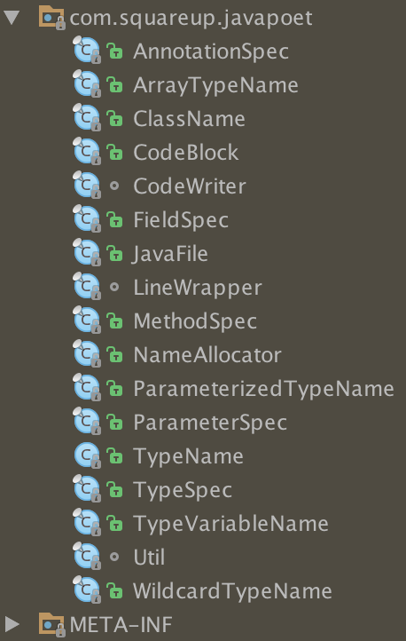

简介：
JavaPoet是square推出的开源java代码生成框架，提供Java Api生成.java源文件。
项目主页及源码：https://github.com/square/javapoet
示例：
compile 'com.squareup:javapoet:1.9.0'
这是一段普通的java代码：
// This codes are generated automatically. Do not modify!
package com.example.helloworld;
import java.lang.String;
import java.lang.System;
public final class HelloWorld {
private static final String key = "hello world";
public static void main(String[] args) {
System.out.println("Hello, JavaPoet!");
}
}
上方的代码是通过下方代码调用JavaPoet的API生成的：
FieldSpec filedSpec = FieldSpec.builder(String.class, "key", Modifier.STATIC, Modifier.PRIVATE, Modifier.FINAL)
.initializer(CodeBlock.of("\"hello world\""))
.build();
MethodSpec main = MethodSpec.methodBuilder("main")
.addModifiers(Modifier.PUBLIC, Modifier.STATIC)
.returns(void.class)
.addParameter(String[].class, "args")
.addStatement("$T.out.println($S)", System.class, "Hello, JavaPoet!")
.build();
TypeSpec helloWorld = TypeSpec.classBuilder("HelloWorld")
.addField(filedSpec)
.addModifiers(Modifier.PUBLIC, Modifier.FINAL)
.addMethod(main)
.build();
JavaFile javaFile = JavaFile.builder("com.example.helloworld", helloWorld)
.addFileComment("This codes are generated automatically. Do not modify!")
.build();
javaFile.writeTo(System.out);
代码说明

观察JavaPoet的代码主要的类可以分为以下几种：
-
Spec 用来描述Java中基本的元素，包括类型，注解，字段，方法和参数等。
- AnnotationSpec
- FieldSpec
- MethodSpec
- ParameterSpec
- TypeSpec
-
Name 用来描述类型的引用，包括Void，原始类型（int，long等）和Java类等。
- TypeName
- ArrayTypeName
- ClassName
- ParameterizedTypeName
- TypeVariableName
- WildcardTypeName
-
CodeBlock 用来描述代码块的内容，包括普通的赋值，if判断，循环判断等。
- JavaFile 完整的Java文件，JavaPoet的主要的入口。
- CodeWriter 读取JavaFile并转换成可阅读可编译的Java源文件。
| key class | description |
|---|---|
| JavaFile | A Java file containing a single top level class |
| TypeSpec | A generated class, interface, or enum declaration |
| MethodSpec | A generated constructor or method declaration |
| FieldSpec | A generated field declaration |
| ParameterSpec | A generated parameter declaration |
| AnnotationSpec | A generated annotation on a declaration |
JavaPoet提供内部Builder供外部更多更好地进行一些参数的设置以便有层次的扩展性的构造对应的内容。另外它提供$L(for Literals), $S(for Strings), $T(for Types), $N(for Names)等标识符，用于占位替换。
使用场景：
1、根据编译时注解生成代码，如Butterknife
2、根据协议文件生成对应代码，如Protobuffer
更多例子：
1、annotationSpec 添加MyAnnotation的注解，然后设置属性hello=world
private static AnnotationSpec makeAnnotationSpec() {
AnnotationSpec.Builder builder = AnnotationSpec.builder(ClassName.get("org.wcong.test.poet", "MyAnnotation"));
CodeBlock.Builder codeBlockBuilder = CodeBlock.builder().add("$S", "world");
builder.addMember("hello", codeBlockBuilder.build());
return builder.build();
}
2、FieldSpec 创建hello的字段并初始化为“world”
private static FieldSpec makeFieldSpec() {
FieldSpec.Builder fileSpecBuilder = FieldSpec.builder(String.class, "hello", Modifier.PRIVATE);
fileSpecBuilder.initializer(CodeBlock.of("\"world\""));
return fileSpecBuilder.build();
}
3、set、get、toString方法
private static MethodSpec makeSetMethod() {
MethodSpec.Builder setMethodSpecBuilder = MethodSpec.methodBuilder("setHello");
setMethodSpecBuilder.addModifiers(Modifier.PUBLIC);
setMethodSpecBuilder.returns(TypeName.VOID);
ParameterSpec.Builder parameterBuilder = ParameterSpec.builder(TypeName.get(String.class), "hello");
setMethodSpecBuilder.addParameter(parameterBuilder.build());
setMethodSpecBuilder.addCode(CodeBlock.builder().add("this.hello = hello;\n").build());
return setMethodSpecBuilder.build();
}
private static MethodSpec makeGetMethod() {
MethodSpec.Builder getMethodSpecBuilder = MethodSpec.methodBuilder("getHello");
getMethodSpecBuilder.addModifiers(Modifier.PUBLIC);
getMethodSpecBuilder.returns(TypeName.get(String.class));
getMethodSpecBuilder.addCode(CodeBlock.builder().add("return hello;\n").build());
return getMethodSpecBuilder.build();
}
private static MethodSpec makeToStringMethod() {
MethodSpec.Builder toStringBuilder = MethodSpec.methodBuilder("toString");
toStringBuilder.addModifiers(Modifier.PUBLIC);
toStringBuilder.returns(TypeName.get(String.class));
CodeBlock.Builder toStringCodeBuilder = CodeBlock.builder();
toStringCodeBuilder.beginControlFlow("if( hello != null )");
toStringCodeBuilder.add(CodeBlock.of("return \"hello \"+hello;\n"));
toStringCodeBuilder.nextControlFlow("else");
toStringCodeBuilder.add(CodeBlock.of("return \"\";\n"));
toStringCodeBuilder.endControlFlow();
toStringBuilder.addCode(toStringCodeBuilder.build());
return toStringBuilder.build();
}
4、生成java类
public static void makeJavaFile() {
TypeSpec.Builder typeSpecBuilder = TypeSpec.classBuilder("MyClass");
typeSpecBuilder.addAnnotation(makeAnnotationSpec());
typeSpecBuilder.addField(makeFieldSpec());
typeSpecBuilder.addMethods(makeMethodSpec());
JavaFile.Builder javaFileBuilder = JavaFile.builder("org.wcong.test.poet", typeSpecBuilder.build());
System.out.println(javaFileBuilder.build().toString());
}
其他资料：